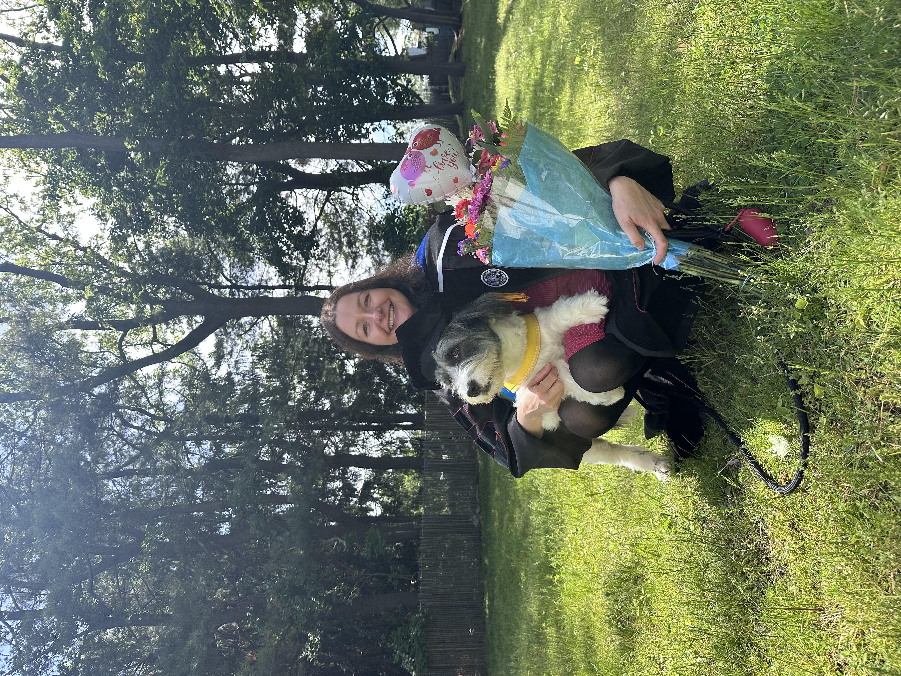
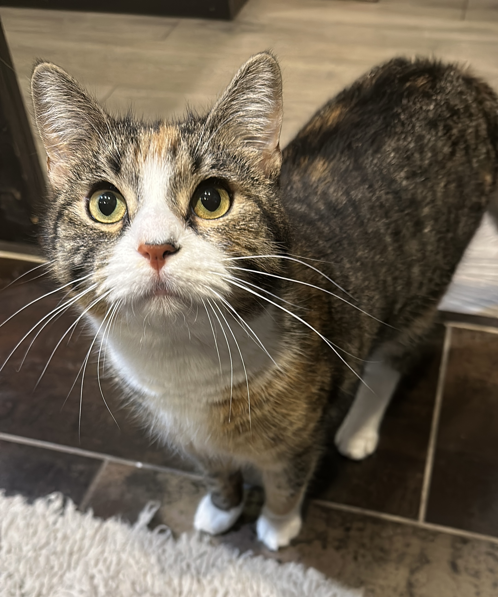

Hello! This is Magda.
I am a Postdoctoral Research Fellow at University of Surrey, where I work on the REVOLUPHON project led by Erich Round. I received my PhD in Linguistics from Stony Brook University, where I was advised by Jeffrey Heinz. I also collaborated closely with Owen Rambow, and was affiliated with the Institute for Advanced Computational Science (IACS).
My research combines computational linguistics, phonology, and machine learning to develop interpretable models of language learning. Drawing on insights from grammatical inference, formal language theory, and phonological theory, I design learners that directly incorporate structured phonological representations, enabling them to generalize from sparse data.
I have also worked on computational pragmatics, modeling belief and common ground in dialogue, and on the documentation and computational analysis of tonal processes of the Grassfields Bantu language Shupamem.


Beyond research
Outside linguistics, I try to be a good pet mama:
Tortellini
 Former member of the Brooklyn Cats gang.
,
Frankie
Former member of the Brooklyn Cats gang.
,
Frankie
 Named after Suicide’s haunting song “Frankie Teardrop.”
and
Simone
Named after Suicide’s haunting song “Frankie Teardrop.”
and
Simone
I love music and film. I'm especially drawn to works that blur the boundaries between the familiar and the uncanny, inviting us to see the world from unexpected perspectives. Artists I feel particularly connected to include David Lynch, Martin Rev and Suicide, Devendra Banhart, and Joy Division.
I believe that we all share a responsibility to care for one another, support vulnerable communities, and protect the other living beings with whom we share the planet. Here are two organizations whose work I encourage others to explore and support: